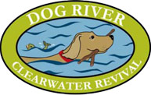
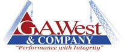
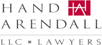
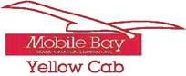
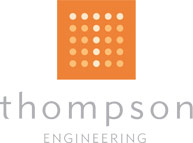

2013 PEP Environmental Stewardship Award Winners
On April 16th, 2013, PEP presented the 9th Annual PEP EnvironmentaStewardship Awards to 6 member companies and a Community Partner during its Annual Membership Meeting at 5 Rivers Delta Center
PEP Member Awards are presented to member companies that have made a significant and positive contribution to the Gulf Coast region’s triple bottom line, economically, environmentally and socially.
PEP Community Partner Awards are given to individuals or organizations that dedicate their time and resources to improve the sustainability and resiliency of Coastal Alabama.
2013 PEP Community Partner Award

Dog River Clear Water Revival
The PEP Board of Directors is pleased to name Dog River Clearwater Revival as the 2013 Community Partner, in recognition of the organization’sefforts to bring attention to and provide solutions for the critical community problem of storm water pollution in Dog River.
Created from a mid-1990’s grassroots movement to monitor the water quality of Dog River, the Dog River Clearwater Revival has developed into a program-oriented non-profit organization dedicated to improving the water quality of the Dog River Watershed through education, litter prevention andcitizen engagement. DRCR’s mission is to create an environment where families, children, citizens, workers, and visitors work and play in a clean,safe, and accessible Dog River Watershed by successfully designing, implementing and monitoring projects that improve the environmental health of the Watershed.
Through projects like The Dog River Scenic Blueway, DRCR promotes stewardship of the Dog River Watershed, encourages cultural and historicalawareness, and provides recreational opportunities for paddling enthusiasts and recreational boaters in Mobile’s urban river and its tributaries.
The Keep It Clean Committee’s mission is at the heart of DRCR’s grassroots movement. The members put into practice their belief that prevention is the best cure and focus on four main components: Trap the Trash; Water Quality Monitoring; Muddy Water Watchers; and Cleanup, Care, Cooperation.
DRCR partners with many other organizations to educate the community on storm water pollution and litter prevention.
PEP is proud to call Dog River Clearwater Revival our 2013 Community Partner.

G.A. West & Company
G.A. West & Company constructed the Unit 6 SCR project at SouthernCompany’s James F. Crist Generating Plant. A Selective Catalytic Reduction (SCR) is one of the most costeffective and fuel-efficient vehicle emissions control technologies and is capable of reducing emissions to near-zero levels. The SCR equipment has already proven to remove 85% to 90% of the unit’s nitrous oxide (NOx) emissions which is a contributor to the development of ground level ozone. A co-benefit of a SCR is that it oxidizes elemental mercury emissions of which a significant amount can be captured by Plant Crist’s environmental control scrubber.
◊ PEP extends special recognition to Southern Company’s Plant Crist for this project.

Hand Arendall LLC
Hand Arendall attorneys and staff have a long standing commitment to conservation, energy and sustainability policies and practices, education and outreach. With the help of Melvin Evans, Director of IT, the Firm has addressed the complex evolution of electronics, software, equipment and systems for five offices, 80 lawyers and over 100 support staff, with energy saving systems and controls for computers, copiers and servers. The Firm’s Sustainability Policy also promotes lighting conservation and established office management policies that encourage paperless office practices, recycling and temperature controls. In IT-related equipment energy savings, the Firm will save approximately 29%. Annually, approximately 19,613 kWh of electricity and $1,726 annually will be saved; CO2 emissions will be reduced by 27,584 pounds and almost $25,000 will be saved through temperature control, paper/recycling and improved general practices. The Firm has presented several seminars about the office sustainable practices and energy savings.

Mobile Bay Transportation/Yellow Cab of Mobile
Mobile Bay Transportation/Yellow Cab (MBT) is a homegrown business working to protect the environment by reducing fuel emissions, endorsingbicycling as an alternate mode of transport and implementing best practices to reduce office waste. To reduce wasted fuel caused by inefficient trip manifest planning, MBT installed a new, state-of-the-art computer based dispatch software system, ITCurves. The GPS based system is configured to analyze various factors to determine the best vehicle to dispatch to most efficiently meet the needs of the rider. This information is delivered to drivers via an Android based tablet in each vehicle. The system has reduced superfluous mileage by 18%which in turn reduces fuel emissions. For maintaining top operational and fuel efficient condition, the system alerts the maintenance department of each vehicle’s routine maintenance and repairs. As part of the new system, paperless billing will be implemented, providing additional economic and environmental benefits. MBT iscommitted to reducing fuel emissions and will be adding bicycle racks to several of the vehicles. Instead of new construction, MBT consolidated offices by renovating a vacant car dealership and helping to revitalize a highprofile area seen by both citizens and tourists. A consolidated and centralized office has resulted in a 15% reduction in gallons of fuel used by the fleet.
Rain for Rent
Using a process never before used in the shipbuilding industry, Rain for Rent (RFR) helped Huntington Ingalls launch their new LHA6 ship withsignificantly reduced environmental impact and a major costs savings. Moving the new LHA6 from dry dock to water posed a problem. As the heaviest vessel to be launched in this way, it would require pumping asignificant amount of ballast water out into adjacent water. Due to the ship’s weight, the water would come from deeper in the barge, the bottom of which is coated in a hydrocarbon based material. This coat float could not be pumped directly into the Pascagoula River. RFR devised a way to capture and store the water instead of direct discharge into the River. RFR captured 3.2 million gallons of water, and after settling, 60,000 gallons required treatment at Waste Oil Collectors facility. Only 2% of the total volume had to be disposed of and the rest (98%) was able to be filtered through carbon and safely discharged back to the river, keeping disposal costs down. The project cost less than 3 million dollars compared to the $7 million cost of the only other option – shipping the 3.2 million gallons to Houston for treatment at a waste oil recovery facility. The project was constructed and completed in 23 days.
◊ PEP extends special recognition to Huntington Ingalls for this project.

Thompson Engineering
Thompson Engineering designed a state-of-the-art waste grease treatment facility to properly handle restaurant waste grease for the Mobile Area Water Sewer System. The plant was designed to convert 300,000 gallons of oil, water and grease trap waste each month into a solid material. The treatment
system is not only keeping our local environment cleaner, it’s reducing costs created by treating grease in conventional waste water treatment digesters. Also important is the current research to make treated restaurant grease reusable. Before the plant could be designed, samples of the grease trap waste were collected; bench scale studies were conducted to determine the physical and chemical characteristics of the grease trap waste; and a literature search was conducted on how other municipalities were treating their grease trap waste. The results of these studies were discussed with the MAWSS staff along with the treatment options and a direction for the design was set.
MAWSS is reviewing possible opportunities for beneficial byproduct reuse, rather than landfilling.
◊ PEP extends special recognition to MAWSS for this project.
2012 Award Winners
2011 Award Winners
2010 Award Winners
2009 Award Winners
2008 Award Winners
2007 Award Winners
2006 Award Winners
2005 Award Winners
2013 PEP AwardsNominations Criteria
Member Testimonials
“This is where a quotefrom a member wouldappear.”
-Member Name
“This is where a quotefrom a member wouldappear.”-Member Name